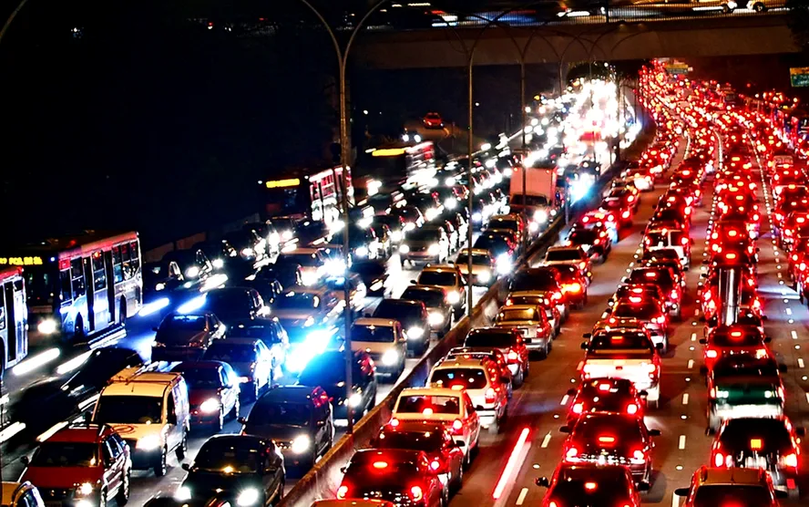

transito
Trânsito é a utilização das vias por veículos motorizados, veículos não motorizados, pedestres e animais de tração, para fins de circulação, parada passageira ou estacionamento.[1] Leis de trânsito são as leis que regem o tráfego e regulamentam os veículos,[2] enquanto que leis da estrada são tanto as leis quanto as regras informais que se desenvolveram ao longo do tempo para facilitar e ordenar o fluxo do trânsito.
Responsabilidade ao volante para evitar acidentes de trânsito
é essencial que os motoristas tenham responsabilidade ao volante, e que as empresas que disponibilizam veículos aos seus funcionários ofereçam alguns serviços para prevenção de acidentes de trânsito, como curso de direção defensiva e garantir que os carros da frota estejam sempre em boas condições.
Para reforçar a segurança nas ruas e estradas do país, confira algumas dicas que preparamos e entenda como evitar acidentes de trânsito!
Premissas para prevenção de acidentes de trânsito
Não usar o celular quando estiver dirigindo
faróis acesos melhoram a visibilidade dos carros nas rodovias, inclusive durante o dia. De acordo com estudo realizado pelo Denatran, a presença de luzes acesas reduz entre 5% e 10% a ocorrência desse tipo d
Em seguida, aguarde até que o veículo da frente ultrapasse esse ponto, conte 2 segundos e só então volte a acelerar. Isso equivale a uma distância média de quase 2 carros.
Apesar de o Código de Trânsito Brasileiro não delimitar uma distância mínima, é preciso ter bom senso e entender qual é o tempo médio de reação e frenagem do seu veículo – lembrando que velocidades maiores exigem tempos mais longos de frenagem.
Para exemplificar o cálculo do tempo de frenagem, um carro a 60 km/h tem uma distância de frenagem de 20 metros, em média. No caso de um carro a 120 km/h, essa frenagem atinge cerca de 110 metros.
Respeitar os limites de velocidade
Um tópico apontado pela OMS diz respeito à velocidade do veículo no momento do acidente: uma em cada três mortes por acidentes de trânsito em todo mundo é ocasionada por alta velocidade.
O relatório Managing Speed indica que uma redução de 5% na velocidade média pode resultar em uma redução de 30% das colisões fatais. O estudo ressalta que quanto maior a velocidade do veículo, maior o risco de lesões e mortes para pedestres. Por isso, respeitar os limites de velocidade é essencial para evitar acidentes de trânsito!
Se beber, não dirija
Quando se fala em prevenção de acidentes de trânsito, um dos tópicos mais comentados é a combinação perigosa entre álcool e direção.
Dirigir embriagado põe em risco a vida do condutor, dos passageiros que dividem o veículo, de pedestres,
No caso de acidentes fatais, a pena é ainda mais rígida – com possibilidade de prisão em regime fechado.
Independentemente da Lei Seca e suas penalidades, o mais importante é que os motoristas se conscientizem dos perigos da direção sob efeito do álcool.
Lembre-se: usar cinto de segurança é essencial!
Apesar de não ser um item que, literalmente, evita acidentes, o cinto de segurança é essencial para que motoristas e passageiros se protejam no caso de uma ocorrência.
Em função disso, usar o cinto de segurança é item obrigatório, determinado pelo Artigo 65 da Lei nº 9503/97.
O cinto impede que o corpo se choque com o volante em caso de batidas e impede que o passageiro de trás seja jogado violentamente contra o branco dianteiro.